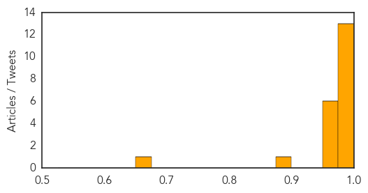

Cholera
30-Day Web Trend
0 alerts, 0 warnings

30-Day Twitter Trend
3 alerts, 0 warnings

Article Locations

Article Confidences
Top Articles:
- 0.999
- South Sudan Cholera Outbreak Kills 18, Over 170 Infected
- 0.998
- Cholera outbreak kills seven in South Sudan
- 0.998
- South Sudan government declares cholera outbreak
- 0.995
- South Sudan government declares cholera outbreak
- 0.994
- KUNA : Cholera kills 18 people in S. Sudan, 171 cases confirmed
- 0.987
- Roundup: Cholera outbreak brings more pain, sufferings to S. Sudanese
- 0.986
- South Sudan cholera outbreak kills at least 18
- 0.985
- At least 18 people die of cholera in South Sudan in three weeks
- 0.981
- Cholera outbreak kills 18 in South Sudan
- 0.980
- South Sudan Suffers New Cholera Outbreak
- 0.980
- Children at risk from cholera outbreak in South Sudan
- 0.979
- Mdecins Sans Frontires to carry out oral cholera vaccination for Burundian and Congolese refugees in Tanzania
- 0.977
- Second round of cholera vaccinations kickoffs in Unity State - South Sudan
- 0.974
- Cholera outbreak kills 19 in South Sudan
- 0.974
- Cholera outbreak kills 18 in south Sudan
- 0.973
- At least 18 people die of cholera in South Sudan in three weeks
- 0.972
- Cholera outbreak kills 18
- 0.971
- Cholera Outbreak Kills 18 In South Sudan
- 0.963
- Cholera outbreak kills 18 in South Sudan
- 0.881
- S/Sudan govt confirms cholera outbreak
- 0.670
- FG Must Strengthen Environmental Health Laws, Articles
Top Tweets:
-
No tweets found for Jun 23, 2015
MERS
30-Day Web Trend
24 alerts, 1 warnings

30-Day Twitter Trend
8 alerts, 0 warnings

Article Locations

Article Confidences

Top Articles:
- 1.000
- Stay alert
- 1.000
- Korea reports 3 more cases, healthy birth after MERS
- 1.000
- Are we following the correct policy?
- 0.999
- Keeping calm
- 0.998
- Confirmed #MERS case
- 0.997
- SGGP English Edition- Vietnam strengthens education of public health about MERS- CoV
- 0.996
- 175 Thais Exposed To Middle East Respiratory Syndrome
- 0.996
- Trickle of new cases lifts South Korea MERS total to 172
- 0.995
- Assessing the Threat of MERS -- Occupational Health & Safety
- 0.994
- MERS outbreak exposes South Korean government’s lack of preparation
- 0.994
- MERS case in Thailand puts Bhutan on high alert
- 0.994
- WHO on five Saudi MERS cases
- 0.989
- H5N1: Orchestrated scientific collaboration: Critical to the control of MERS-CoV
- 0.972
- Lam Dong: Suspected MERS-CoV case quarantined
- 0.945
- Russian tourist quarantined for MERS check
- 0.904
- Fewer Pinoys visiting South Korea
- 0.895
- Cambodia on high alert after 1st case of MERS found in Thailand
- 0.892
- Cambodia on high alert after 1st case of MERS found in Thailand - Xinhua
- 0.810
- With South Korean tourists arriving in droves, Boracay jetty port seeks DOH help on MERS-COV scare
- 0.728
- Koreans in Baguio on alert against MERS
- 0.675
- Samsung’s Lee Apologizes for MERS Outbreak at Company Hospital
- 0.581
- Samsung apologizes for MERS outbreak at company hospital
Top Tweets:
- 0.771
- AFD blog `WHO MERS Update – Saudi Arabia' MERS-CoV http://t.co/VZucmCqdll
- 0.567
- AFD blog `Korean MERS Cluster Adds 3 More Cases (Total =175)' MERS-CoV http://t.co/8GWSyXfr43